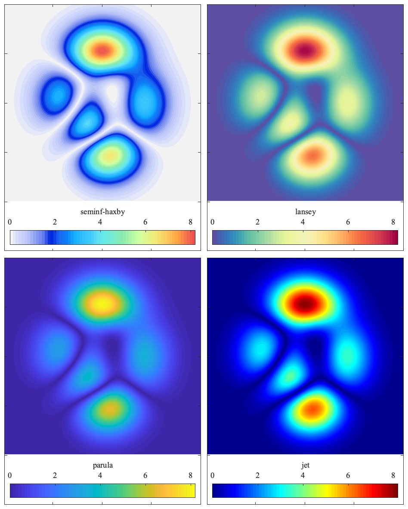

SEMINFHAXBY The seminf-Haxby colormap. __________________________________________________________________  __________________________________________________________________ SEMINFHAXBY(M) returns an M-by-3 matrix containing the seminf-Haxby colormap, see http://soliton.vm.bytemark.co.uk/pub/cpt-city/jjg/misc/ tn/seminf-haxby.png.index.html SEMINFHAXBY with no arguments returns a colormap having the same number of colors as the colormap of the current figure. To make SEMINFHAXBY your default colormap, add to your startup.m file the line "set(0,'DefaultFigureColormap',seminfhaxby)". 'seminfhaxby --f' generates the figure shown above. Usage: h=seminfhaxby(M); colormap seminfhaxby __________________________________________________________________ This is part of JLAB --- type 'help jlab' for more information (C) 2020 J.M. Lilly --- type 'help jlab_license' for details